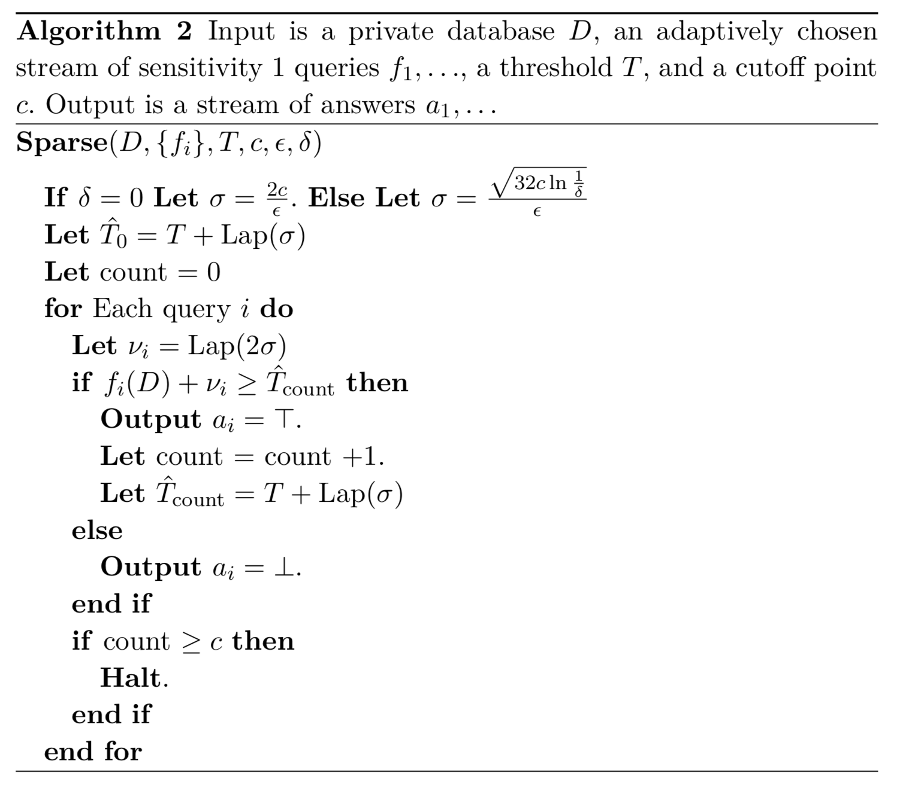

3.6.1 稀疏算法
现在，我们展示如何使用合成技术处理多个“高于阈值”的查询。
稀疏算法可以认为是：当查询进入时，它会反复调用 AboveThreshold。 每次报告高于阈值的查询后，该算法仅在 AboveThreshold 的新实例上重新启动剩余的查询流。在重新启动AboveThreshold c 次之后停止（即在出现 c 个高于阈值的查询之后）。 由于 AboveThreshold 的每个实例都是(ε,0)- 差分隐私的，因此适用合成定理。

定理 3.25 稀疏算法是 (ε,δ)-差分隐私的。
【证明】 我们发现到 Sparse 算法完全等同于以下过程：我们对查询流 {fi} 运行 AboveThreshold 算法 (D,{fi},T,ε′)，并设置：
ε′={cε8clnδ1εif δ=0;Otherwise.
使用 AboveThreshold 算法提供答案。当 AboveThreshold 算法停止时（在回答了1个超过阈值的查询之后），我们只需在剩余的查询流上重新启动 Sparse算法(D,{fi},T,ε′) ，并继续这个过程直到我们重新启动 AboveThreshold 算法 c 次。第 c 次 AboveThreshold 算法停止后，Sparse算法 也停止。我们已经证明了AboveThreshold 算法 (D,{fi},T,ε′) 是(ε′,0)-差分隐私的。最后，根据高级合成定理（定理 3.20 和 推论 3.21），c 个
ε′=8clnδ1ε-差分隐私算法的合成是 (ε,δ) -差分隐私，并且 c 个 ε′=ε/c- 差分隐私算法的合成是 (ε,0) -差分隐私。
需要证明 包含 c 个 AboveThreshold 算法 的 Sparse 算法的准确性。我们注意到，如果对于每个 AboveThreshold 算法 (α,β/c) 精确的，那么 Sparse 算法将是 (α,β) 精确的。
【定理 3.25 证毕】
定理 3.26 对于 k 个查询的任何序列，f1,...,fk 使得 L(T)≡∣{i:fi(D)≥T−α}∣≤c。如果 δ>0，当：
α=ε(lnk+lnβ2c)512clnδ1
Sparse 算法是 (α,β) 精确的。
如果 δ=0，当：
α=ε8x(lnk+ln(2c/β))
Sparse 算法是 (α,β) 精确的。
【证明】 运用 定理3.24 的证明方法，将 β 设为β/c，并分别根据 δ>0 或 δ=0 将 ε 设为 8clnδ1ε 和 ε/c 即可。